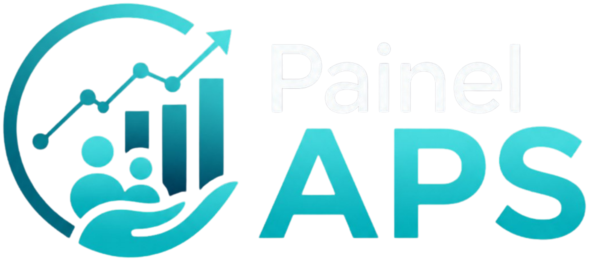

Importa dados exportados
Utiliza relatórios operacionais do e-SUS APS/PEC, sem acessar ou alterar diretamente a base oficial do prontuário.

O Painel APS transforma relatórios do e-SUS APS/PEC em informação útil para organizar linhas de cuidado, localizar pendências, priorizar usuários e apoiar decisões da equipe no território.
O Painel APS é um programa desenvolvido para transformar dados já existentes no e-SUS APS/PEC em informação útil para a gestão clínica e territorial da Atenção Primária. A ferramenta parte de relatórios exportados em formato CSV e realiza, de forma automatizada, o cruzamento de informações entre diferentes linhas de cuidado.
A proposta é simples: os dados que normalmente ficam dispersos em relatórios operacionais passam a ser organizados em uma leitura nominal, territorial e orientada por prioridades. Com isso, a equipe consegue identificar usuários em acompanhamento irregular, exames pendentes, atrasos em rastreamentos, lacunas de registro e situações que exigem busca ativa ou reorganização da agenda.
O programa funciona como uma ponte entre o prontuário eletrônico e a rotina real da unidade. Ele não cria uma nova obrigação burocrática; ele reaproveita os registros que a APS já produz e os devolve em forma de decisão prática para reunião de equipe, programação de atendimentos, monitoramento de indicadores e responsabilidade sanitária sobre a população adscrita.
Utiliza relatórios operacionais do e-SUS APS/PEC, sem acessar ou alterar diretamente a base oficial do prontuário.
Relaciona linhas assistenciais, indicadores, prazos e registros para apontar atrasos e necessidades de acompanhamento.
Organiza usuários, pendências e prioridades para reuniões de equipe, busca ativa, mutirões e planejamento territorial.
Em vez de analisar hipertensão, diabetes, pré-natal, puerpério, saúde da mulher e territorialização como áreas isoladas, o Painel APS permite enxergar sobreposições importantes e transformar essas interseções em ação concreta.
Esse é o principal diferencial do programa: ele cruza linhas de cuidado com prazos, indicadores, registros clínicos e localização territorial. Assim, uma pendência deixa de ser apenas um número agregado e passa a aparecer como uma necessidade concreta, vinculada a uma pessoa, a uma linha assistencial e a uma microárea.
Na prática, a equipe passa a enxergar quem precisa de cuidado, qual pendência existe, em qual linha assistencial ela se localiza, há quanto tempo está atrasada e onde esse usuário está no território. Essa visão integrada ajuda a reduzir perdas de seguimento, qualificar a busca ativa e direcionar melhor o trabalho de médicos, enfermeiros, técnicos e ACS.
A segurança é um eixo central da proposta. O Painel APS foi pensado para funcionar de forma 100% offline, no próprio computador da unidade, sem envio de prontuários, nomes ou identificadores para servidores externos.
O programa trabalha apenas com arquivos exportados pelo próprio profissional e opera em modo de leitura. Isso significa que ele não escreve, altera, injeta ou corrompe informações na base oficial do e-SUS PEC. A base original permanece preservada; o Painel apenas interpreta relatórios já gerados e organiza essas informações em uma interface mais útil para o cuidado.
Essa arquitetura reduz riscos de exposição de dados sensíveis, preserva o sigilo profissional e favorece conformidade com a LGPD. Também permite o uso em unidades com internet instável ou ausente, sem depender de servidores externos, contas em nuvem ou transmissão de dados identificáveis.
O programa trabalha com arquivos exportados e não modifica a base oficial do e-SUS PEC.
Os dados permanecem no computador da unidade, reduzindo risco de exposição de informações sensíveis.
A lógica offline favorece conformidade com a LGPD e preserva o sigilo assistencial.
Na prática, o programa converte dados brutos em listas de trabalho. Isso facilita reuniões de equipe, planejamento dos ACS, busca ativa, organização de mutirões, priorização de agendas e acompanhamento de indicadores.
A unidade passa a trabalhar com uma visão mais clara da sua população. Em vez de depender apenas da memória da equipe, de planilhas manuais ou de conferências demoradas no prontuário, o Painel APS aponta prioridades de forma objetiva e reproduzível. Isso melhora a capacidade de planejar ações, acompanhar resultados e corrigir vazios assistenciais antes que eles se transformem em agravamentos evitáveis.
Outra vantagem é a simplicidade operacional. O programa é leve, gratuito, executável em Windows e não exige instalação complexa nem permissões administrativas. Pode ser utilizado em unidades com estrutura básica e permite atualização das regras de análise conforme mudanças em notas técnicas, indicadores ou prioridades locais.
Permite visualizar prioridades por microárea, favorecendo ações planejadas no território e melhor distribuição do trabalho da equipe.
Ajuda a unidade a sair de uma lógica apenas reativa, identificando usuários em risco antes que a demanda apareça como urgência.
É leve, gratuito, executável em Windows e adequado para unidades com internet instável ou ausente.
A parametrização permite ajustar critérios de análise conforme notas técnicas, indicadores e prioridades assistenciais.
O Painel APS funciona como uma camada inteligente de apoio à gestão do cuidado. Ele não substitui o julgamento clínico nem o trabalho da equipe, mas amplia a capacidade de identificar riscos, organizar prioridades, acompanhar populações adscritas e transformar informação em ação. Seu valor está em tornar visível o que muitas vezes fica escondido nos relatórios: pessoas com necessidades concretas, distribuídas no território, aguardando acompanhamento oportuno da Atenção Primária.
Contato para Implantação